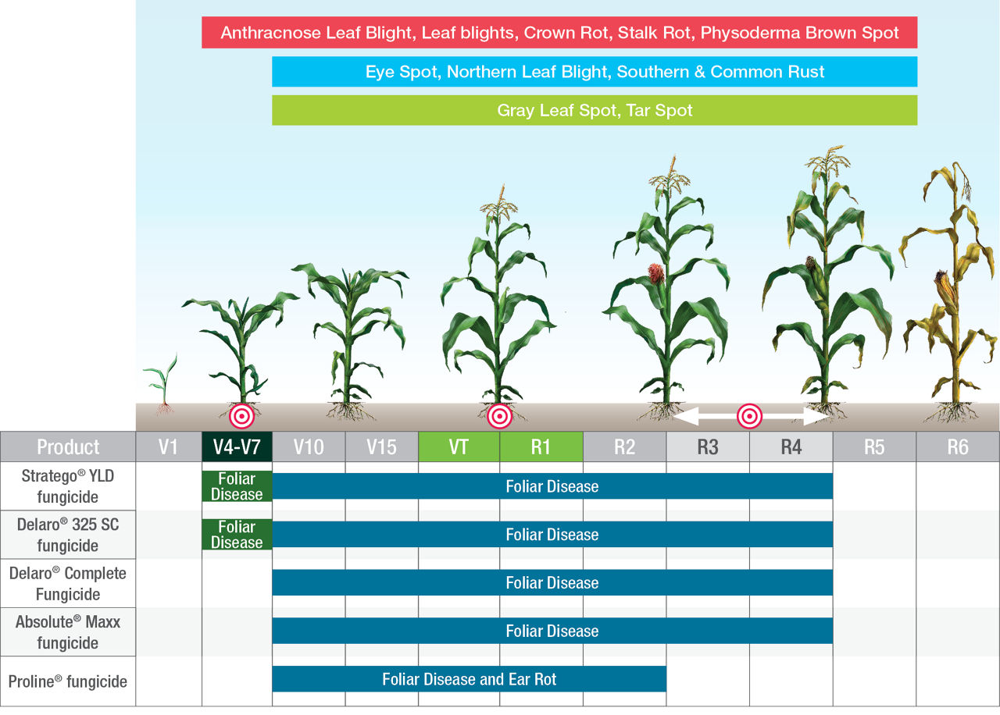

- Maize (Zea mays L.) is one of the most versatile emerging crop shaving wider adaptability under varied agro-climatic conditions. Globally, maize is known as queen of cereals because it has the highest genetic yield potential among the cereals.
- According to advance estimate it is cultivated in 8.7m ha (2010-11) mainly during Kharif season which covers 80% area.
- maize serves as a basic raw material as an ingredient to thousands of industrial products that includes starch, oil, protein, alcoholic beverages, food sweeteners, pharmaceutical, cosmetic, film, textile, gum, package and paper industries etc
Maize popularly known as “corn” is one of the most versatile emerging cash crops having wider adaptability under varied climatic conditions. It is called queen of cereals globally. In India, maize or corn is the third most important food cash crops after wheat & rice. Maize is grown throughout the year in all states of the country for various purposes including fodder for animals, food grain, sweet corn, baby corn, green cobs, and pop corn. Corn flour is consumed widely in Indian cooking. Maize or corn serves as a basic raw material to thousands of industrial products that may include oil, starch, alcoholic beverages, pharmaceutical, food sweeteners, food cereals, cosmetic, film, gum, textile, package and paper industries
Problems Faced By Farmers
Maize cultivation is held back by a lack of resources and training for farmer. These constraints include lack of access to improved varieties and good quality seed, limited access to often expensive fertilisers and pesticides, poor dissemination of good agricultural practice, the need for affordable, small-scale mechanisation to replace manual labour and significant post-harvest losses due to poor storage, pest attack and spoilage
| Pests Or Diseases | Recommended Product Solutions |
|---|---|
cyperus retnundous |
 |
better crop |
 |
better efficay |
 |